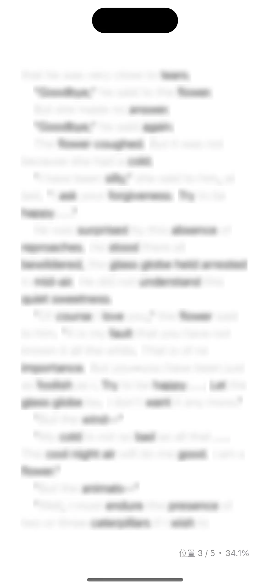
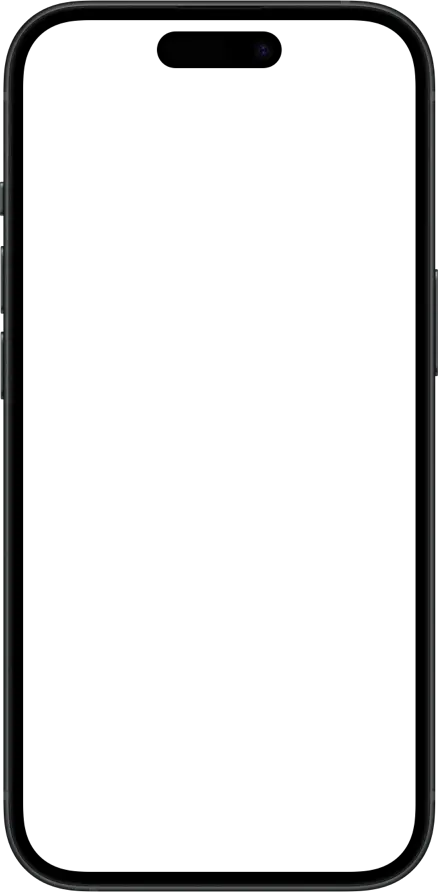

模糊文本功能允许用户将电子书中的文本内容进行模糊显示，非常适合用于英语学习中的逐句精听和复述练习。


使用限制
此功能仅支持文本格式的书籍，不支持PDF文件。
如何开启
按照以下步骤启用模糊文本功能：
-
打开您想要阅读的电子书。
-
点击屏幕顶部菜单栏的
 进入模糊文本设置页面。如果顶部菜单栏没有此图标，请点按
进入模糊文本设置页面。如果顶部菜单栏没有此图标，请点按  按钮，然后选择“模糊文本”。
按钮，然后选择“模糊文本”。

-
将开关滑动至“开启”状态，以激活模糊文本功能。激活后，点击模糊内容即可显示所点击句子的完整文本。
选项说明
- 自动显示播放后的句子：开启后，播放完句子后将自动显示该句子的文本。
- 点击恢复模糊：开启后，点击句子文本可在模糊和显示之间切换。
- 模糊强度：调节模糊效果的强度，数值越高，文本显示越模糊。
使用场景
模糊文本功能可用于以下英语学习练习。
逐句精听
利用模糊文本功能进行逐句精听是一种高效的听力训练方法。打开书籍后，按照以下步骤进行逐句精听练习：
-
启用模糊文本功能
开启模糊文本功能，将文本中的每一句话设置为模糊。 -
第一遍听力练习
播放音频，尝试抓住大意。此时，文本仍保持模糊，你需要依赖听力推测模糊部分的内容。这一步帮助锻炼听力推理和语境理解能力。 -
逐句揭示文本
听完一句后，点击相应的模糊区域，显示该句的具体文本内容。对照音频与文本，确认自己是否理解了听到的内容。如果某部分不理解，可以通过反复听模糊文本中的句子，直到完全掌握。 -
回放并巩固
回放音频，关注发音、语调、连读等语言细节。可以通过点击恢复模糊的功能，反复练习，直到完全理解每个句子的听力内容。